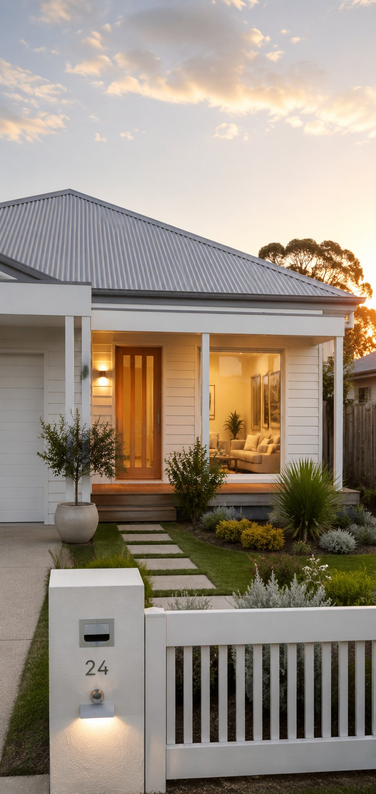

Living & thriving
in Australia
Arriving is the start, not the finish. How you settle, at work and beyond it, decides whether the move lasts.
Finding your feet in a new system
Practising in a new country takes adjustment: new systems, new colleagues, a slightly different culture of care. Australian teams are used to welcoming international clinicians and describe a runway rather than a cold plunge.
Expect a proper induction, supportive colleagues and, where relevant, a period of orientation or supervision as you find your rhythm. The culture tends to be collaborative and relatively flat: first names, open communication, multidisciplinary teamwork, and many clinicians say care feels a touch less rushed than they were used to. Within a few months, the unfamiliar becomes ordinary.
One national registration means your career isn’t fixed to one place: as you settle, you can develop, specialise or move between states without starting your paperwork over.
Finding your people
A job is only part of a life. The families who thrive are the ones who build connection early, and Australia, as one of the most multicultural countries on earth, makes that easier than most.
Already here
Whatever your background, there’s likely an established community from home: cultural associations, events and networks that make the first months feel familiar.
A place to worship
Churches, mosques, temples, gurdwaras and faith communities of every kind are part of the fabric of Australian cities and towns.
School & sport
Children’s schools and weekend sport are, for many parents, where friendships form fastest, for the whole family.
The everyday life
Not the holiday version — what an ordinary week here actually looks like, because that is the part you live.
The outdoors, on tap
Beaches, parks, bush and sport are woven into normal life. An early swim, a weekend hike, a barbecue in the park, the climate makes the outdoors a default, not an effort.
Room to breathe
Outside the biggest-city centres, space and shorter commutes give time back. For many, that reclaimed time is the single biggest change.
A childhood outside
Families consistently say it’s a wonderful place to raise children: safe, active and outdoors, with strong schools and a gentler pace.
From a long stay to a home
There’s a difference between living somewhere and belonging there, and the move only really succeeds when it crosses that line.
It helps to stay honest about the hard parts, the distance from family is real, and most people plan trips home and regular calls to manage it. But belonging tends to creep up quietly: a local you’re a regular at, neighbours who know your name, a team that feels like yours, children who sound like locals. Give it a year, keep saying yes to invitations, and the place stops being somewhere you moved to and starts being home.
You’ll hear from us when it’s hardest
Most agencies are busiest before you fly and quiet afterwards. We work the other way round: almost everyone hits a wobbly stretch around the third month, and our support is timed for it.
The week you land
We know your arrival date, and you have a mobile number that a person answers. Not a duty line or a ticket, the same people you’ve dealt with all along, who know your name and your situation.
Your first fortnight
We call once the adrenaline wears off, when the admin arrives all at once: tax file number, bank account, Medicare, school enrolment. We’ll also introduce you to a family who made the same move to your area, if you’d like that.
Around three months
A deliberate check-in, timed for the dip, because we know it’s coming. It’s the call people are most surprised to get and most glad of. Not a satisfaction survey, just an honest conversation about how it’s actually going.
A year on, and after that
There’s no end date on it. A contract question, a move interstate, work for your partner, a reference years later. We’d rather you called. We measure this work by how you’re living a year on, not by the placement.
We’re a small team, not a concierge service. The settling in is yours to do — what we promise is that you’ll always know who to call, and they’ll already know your story.

We measure a good move in years, not weeks, which is why we don’t disappear once you’ve landed. The clinicians we placed are the ones we check in on, introduce to others, and help when the next decision comes around. Settling takes a season or two; thriving takes saying yes to the place. If you keep us posted, we’ll keep helping. That’s rather the point of doing this properly.
SophieCEO & Founder, Ethicare Resourcing
The things people ask us first
How long until it feels like home?
For most people, the practical side settles within weeks and the emotional side within a year. The turning point is usually social: once you have a few real friendships and a routine that’s yours, it stops feeling like a move and starts feeling like life.
Will I keep progressing in my career?
Yes. Australia’s health system is large and modern, with genuine room to develop, specialise and take on senior or lead roles. National registration means you can also change setting or state as your goals evolve.
How do people manage the distance from home?
Planned trips back, regular video calls, and leaning on the community here. It’s the hardest part for close families, and naming it honestly, rather than pretending it’s nothing, is how most people make peace with it.
Can I move to a different state later?
Generally yes. Your national registration travels with you; you’d just sort housing, schools and any state radiation licence for the new location. Many clinicians move once or twice as they find the pace and place that suits them.
Keep exploring
Ready when you are
Whether you’re months from a decision or ready to begin, we’d love to help you build a life and career in Australia, honestly, and at your pace.
Ethicare Resourcing · your guide to a life and career in Australia.